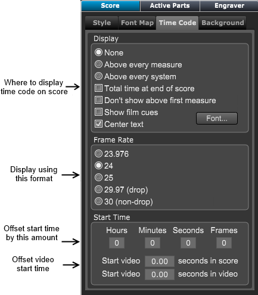

Score Panel - Time Code Section
Score Panel - Time Code Section
If the Score Layout panel is not showing click on the Layout button at top right of Control Bar or type "Shift-L" to open the panel.
Then choose the Score panel.
If necessary click on the Time Code tab to display the time code settings.

Displaying Time Code in the score
To display time code on your scores, choose the options below in the display section.
- None - If set no time code will be shown
- Above every measure - If set, time code values are displayed above every measure.
- Above every system - If set, time code values are displayed above every system.
- Total time at end of score - If set, the time code at end of score is displayed.
- Don't show above first measures - If set, the first bar's time code is not displayed.
- Show film cues - If set, a horizontal time grid is drawn above the top system that displays time and hit points.
Frame Rate
Overture displays time code in standard SMPTE format used for film and TV scoring.
In film scoring, time code is calculated based on the number of frames per second.
Overture supports several common frame rates, 27.976, 24, 25, 29.97 (non-drop), and 30 (non-drop).
Start Time
- Overture requires you set the starting time code of the first measure in hours, minutes, seconds, and frames.
- Start video [x.xx] seconds in the score. This is the time position at which you want the video to start playing back in the score.
- Start video [x.xx] seconds in video. This is the time position at which you want the video to start playing back from within the score.
For example, if you had a video that starts with three seconds of lead-in tape or credits, you would probably want to ignore the first three seconds and start playing the video from after that point.
To do this, you would set Start video [] seconds numerical to 2.00.
.